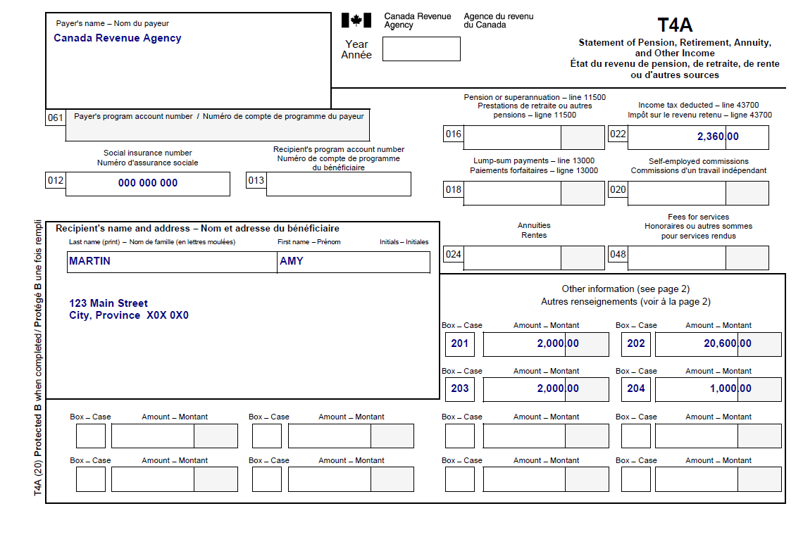
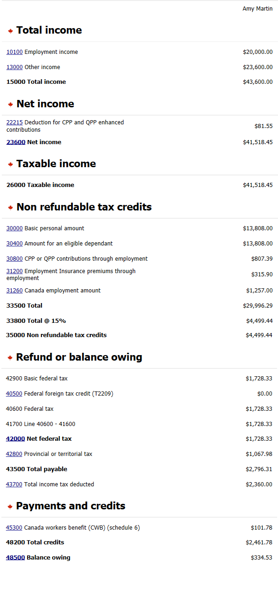

Reporting COVID-19 benefits repayments
Pre-test question
Sorry, that's incorrect
The CRA will issue one T4A slip that includes all COVID-19 benefit amounts the individual received from the CRA. Each type of benefit payment will have its own box number on the slip.
That's correct
The CRA will issue one T4A slip that includes all COVID-19 benefit amounts the individual received from the CRA. Each type of benefit payment will have its own box number on the slip.
Instructions
- Open the UFile CVITP software
- Review the background information and slips required (tax slips, receipts, etc.)
- Enter all the necessary information into the required sections of UFile
- Once completed, compare your results with the solution provided
- Check out the takeaway points at the end
Background information
Situation
Amy worked part time at Madame Chic Ltd. In 2021, she applied for and received:
- the Canada Recovery Benefit (CRB)
- the Canada Recovery Caregiving Benefit (CRCB)
- the Canada Recovery Sickness Benefit (CRSB)
In 2020, she had applied for and received the Canada Emergency Response Benefit (CERB). In 2021 she found out she was no longer eligible and paid back $2,000 to the CRA.
When preparing her tax return, she informs you that she wishes to claim what she paid back to the CRA in her 2021 income tax return.
Identification information
| Name | Pierre Knowlton |
|---|---|
| Social insurance number (SIN) | 000 000 000 |
| Address | 123 Main Street City, Province X0X 0X0 |
| Date of birth | October 9, 1990 |
| Marital status | Single |
| Dependant | Son : Tyler Martin DOB : January 1, 2014 |
Slips required
T4A – Statement of Pension Plan, Retirement, Annuity, and Other Income slip (Canada Revenue Agency)
Text version
T4A – Statement of Pension, Retirement, Annuity, and Other Income Protected B Payer’s name: Canada Revenue Agency Recipient’s name and address: Last name: Martin First name: Amy 123 Main Street City, Province X0X 0X0 Box 12: Social insurance number: 000 000 000 Box 22: Income tax deducted – line 43700: 2,360.00 Other information (see page 2) Box 201: 2,000.00 Box 202: 20,600.00 Box 203: 2,000.00 Box 204: 1,000.00T4 – Statement of Remuneration Paid (Madame Chic Ltd.)

Text version
T4 – Statement of Remuneration Paid Protected B Employer’s name: Madame Chic Ltd. Employee’s name and address: Last name: Martin First name: Amy 123 Main Street City, Province X0X 0X0 Box 12: Social insurance number: 000 000 000 Box 14: Employment income – line 10100: 20,000.00 Box 16: Employee’s CPP contributions – see over: 888.94 Box 18: Employee’s EI premiums – line 31200: 315.90 Box 24: EI insurable earnings: 20,000.00 Box 26: CPP/QPP pensionable earnings: 20,00.00Review your results
Text version
T4 – Statement of Remuneration Paid Protected B Employer’s name: Madame Chic Ltd. Employee’s name and address: Last name: Martin First name: Amy 123 Main Street City, Province X0X 0X0 Box 12: Social insurance number: 000 000 000 Box 14: Employment income – line 10100: 20,000.00 Box 16: Employee’s CPP contributions – see over: 888.94 Box 18: Employee’s EI premiums – line 31200: 315.90 Box 24: EI insurable earnings: 20,000.00 Box 26: CPP/QPP pensionable earnings: 20,00.00Takeaway points
Steps to follow
- Review their background information and the required slips
- Check the box next to Pension income, other income and split pension income, COVID-19 benefits (T4A, T4A(OAS), T4A(P), T4A-RCA, T4RSP, T4RIF, T1032) from the Pension section
- Select T4A and pension income from the left side menu and click the + sign next to T4A – Pension, retirement, annuity, and other income (COVID-19 benefits) from the Pension income section
- Enter the federal income tax deducted, if any, into Field 22, then select the option applicable to the box number from the Other information drop-down menu and enter the amount reported on the T4A
- For Repayments of a federal COVID-19 financial assistance, enter the amount the individual wishes to claim for 2021
An individual who makes a repayment of federal COVID-19 benefits for amounts they received in 2020 can claim the repayment as a deduction. They can choose between claiming the full amount or a portion either in the year it was paid (2021) or the year the benefit was received (2020). The repayment will show in box 201 of their T4A slip.
If the individual received their CERB from Service Canada, the amount repaid will be reported in box 30 of their T4E slip, along with other EI amounts repaid.
In this case, Amy confirmed she wanted to claim the deduction for the $2000 repayment she made, on her 2021 tax return.